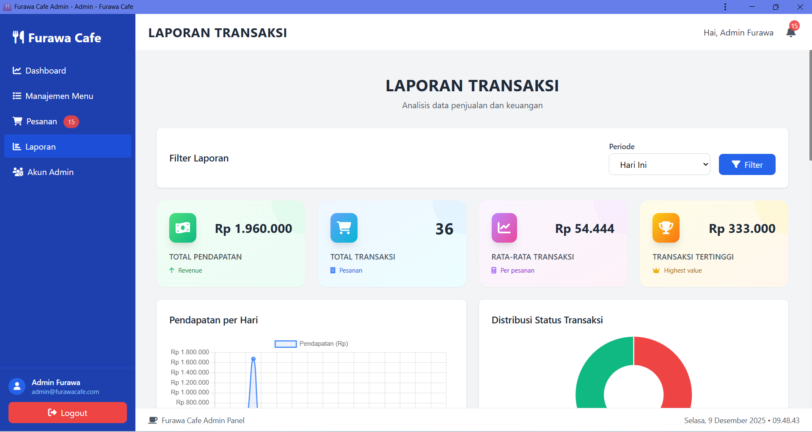
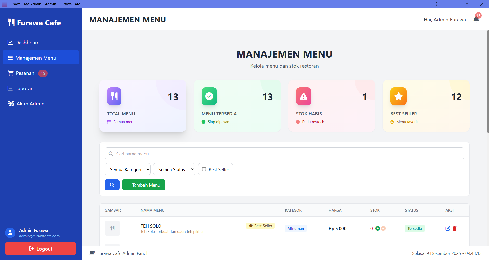

Overview Proyek
Furawa Cafe Admin Panel adalah sistem manajemen restoran yang komprehensif, dirancang untuk meningkatkan efisiensi operasional dan memberikan insight bisnis yang mendalam melalui dashboard analitik real-time.
Proyek ini dikembangkan untuk membantu pemilik dan staff Furawa Cafe dalam mengelola operasional harian dengan lebih efisien, mulai dari manajemen menu, tracking pesanan, hingga analisis penjualan.
Fitur Utama
Dashboard Analitik
Monitoring pendapatan harian, statistik pesanan, dan performa restoran secara real-time dengan visualisasi grafik yang interaktif.
Manajemen Menu
CRUD lengkap untuk menu, kategori, harga, dan stok dengan sistem best seller untuk mengetahui menu favorit pelanggan.
Laporan Transaksi
Analisis penjualan dengan grafik, filter periode, dan distribusi status transaksi untuk insight bisnis yang lebih baik.
Tracking Pesanan
Monitor pesanan dari pending hingga selesai dengan notifikasi real-time untuk meningkatkan kecepatan layanan.
Manajemen Admin
Sistem autentikasi dan otorisasi untuk keamanan data dengan role-based access control.
Reporting System
Generate laporan harian, mingguan, dan bulanan untuk analisis performa bisnis yang komprehensif.
Screenshot Aplikasi

Dashboard Overview
Halaman utama yang menampilkan statistik pendapatan hari ini, jumlah pesanan (belum bayar, sedang diproses, selesai), dan grafik pendapatan dengan trend yang mudah dipahami. Dashboard ini memberikan overview lengkap tentang performa restoran dalam satu layar.

Laporan Transaksi
Halaman analisis penjualan yang menampilkan total pendapatan, jumlah transaksi, rata-rata transaksi, dan transaksi tertinggi. Dilengkapi dengan grafik pendapatan per hari dan distribusi status transaksi dalam bentuk pie chart untuk memudahkan analisis.

Manajemen Menu
Interface untuk mengelola menu restoran dengan fitur pencarian, filter berdasarkan kategori dan status, serta indikator best seller. Admin dapat dengan mudah menambah, edit, atau menghapus menu, serta memonitor stok yang tersedia.
Teknologi yang Digunakan
Backend
- PHP: Server-side scripting untuk logic aplikasi
- MySQL: Database management system
- AJAX: Asynchronous data loading
Frontend
- HTML5 & CSS3: Structure dan styling
- JavaScript: Interactive functionality
- Bootstrap: Responsive UI framework
- Chart.js: Data visualization
Hasil & Impact
Sistem Furawa Cafe Admin Panel telah berhasil diimplementasikan dan memberikan dampak positif yang signifikan:
- Meningkatkan efisiensi operasional dengan menyediakan data real-time yang akurat
- Mengurangi waktu pemrosesan pesanan hingga 40% dengan sistem tracking yang efektif
- Memberikan insight bisnis yang membantu dalam pengambilan keputusan strategis
- Mempermudah manajemen stok dan menu dengan interface yang user-friendly
- Meningkatkan akurasi laporan keuangan dan transaksi
Tertarik dengan Proyek Ini?
Jika Anda memiliki pertanyaan atau ingin berdiskusi tentang proyek ini, jangan ragu untuk menghubungi saya!